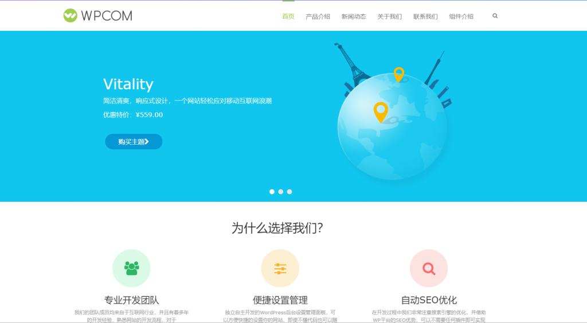

WordPress是世界上流行的建站程序，英文世界中有超过10,000个WordPress主题，使用WordPress可以很方便的建好英文站。然而，使用WordPress建立中文站，能选择的主题确实不多，今天就给大家分享下这个中文站最好WordPress主题，也是本站正在使用的主题，介绍的这些国内最好WordPress主题都支持第三方登录，如微博、QQ、微信等，本站(dotnet9.com)目前支持QQ、微博登录，wpcom主题官方有第三方设置帮助文档，关于主题相关的问题可以和群主讨论。
本文介绍的这些中文站最好WordPress主题，都是收费主题，并且由wpcom官方提供一年免费技术支持和永久免费升级；使用WordPress建站是，一套好的主题会给你的网站带来意想不到的效果。
中文最好WordPress主题JustNews – 适合中文博客、自媒体、资讯站
JustNews主题专为博客、自媒体、资讯类的网站设计开发，堪称WordPress中文最好主题，可自适应兼容手机、平板设备，支持前端用户中心，可以前端发布/投稿文章，同时主题支持专题功能，可以添加文章专题。 这套主题有2种风格，购买后你可以根据自己喜好选择相应风格。两种风格的效果如下图所示，本站dotnet.com使用的左侧风格，适合程序员的博客站点：
{kind=link}
售价：仅￥499 元
Module主题 – 适合企业站最好WordPress主题
Module主题采用全新模块化开发，首页模块可视化拖拽自由组合，可自定义搭建出不同行业适用的企业网站。同时主题全面支持WPML多语言切换，可轻松搭建外贸网站。 这个主题对于要快速建站的小伙伴是非常有用的，可以节省很多时间。
该主题有7种风格，适合多种多样的公司风格，如下图所示：
{kind=link}
{kind=link}
售价：仅￥699 元
Sage主题 – 适合商城最好WordPress主题
Sage主题专为在线商城网站需求而开发，通过深度整合WooCommerce插件可让wordpress具备强大的电子商务网站功能，实现完整的在线购物流程。演示风格如下：
{kind=link}
售价：仅￥1299 元
JustMedia主题 – 适合图片、视频、资讯最好WordPress主题
JustMedia主题专为图片、视频、资讯类的网站量身定制开发，响应式设计可自适应兼容手机、平板设备，同时主题自带前端用户中心功能，可支持社交帐号一键登录。
{kind=link}
售价：仅￥499 元
Third主题 – 适合传统企业官网最好WordPress主题
Third是WPCOM团队原创制作的WordPress主题，定位于传统行业的企业官网建设，所以设计风格略显沉稳。同样的，Third主题也采用了响应式布局，能够自适应手机等移动设备访问。
{kind=link}
售价：仅￥599 元
MobX-MIP主题 – 适合中文博客、自媒体、资讯站最好WordPress主题
MobX-MIP主题基于百度MIP-HTML规范开发，完美支持百度MIP校验，可实现百度移动端搜索结果极速打开页面，更好的用户体验，更有利于SEO优化 。
{kind=link}
售价：仅￥199 元
Vitality主题 – 适合企业官网WordPress主题
Vitality是继TheSimple之后WPCOM原创制作的第二套wordpress主题，继承了原创框架的优良特性，设置方便，简洁大气，自适应设备宽度，适合各类企业网站使用。
{kind=link}
{kind=link}